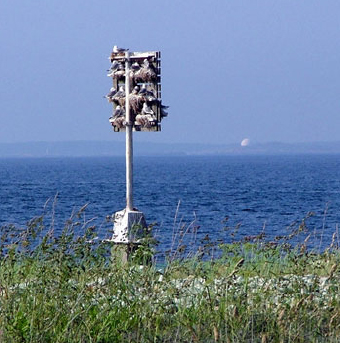
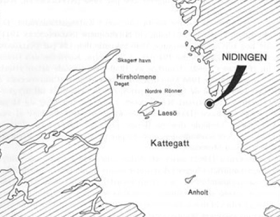

Den 13 augusti 1967 erhöll Naturhistoriska museet i Göteborg en telefonförfrågan angående en säregen mås. Den hade uppmärksammats på den lilla ön Nidingen utanför Onsalalandet i Nordhalland, och enligt uppgiftslämnaren uppehöll den sig trots den sena tidpunkten invid bo med unge. Beskrivningen av ungen stämde med tretåig mås, varför undertecknad påföljande dag efter kontakt med fyrmästare V. SJÖSTEDT på Nidingens fyrplats beslöt att söka kontrollera arttillhörigheten på ort och ställe. Genom fyrfolkets välvilliga bistånd kunde jag också i vackert väder, men i frisk vind ta mig ut till ön.
Ön Nidingen
Ön Nidingen ligger 7 km från de sydligaste uddarna på Onsalalandet och 5 km från den däremellan liggande större Malön. Ön betecknas ofta såsom skär och dess storlek är ej heller betydande, maximala längden är ungefär 1000 m och största bredden 3–400 m. Ön är låglänt, den uppbygges främst av smärre och större stenblock, svallgrus och sand samt klappersten. Vegetationen består av den för det yttre havsbandets västkustöar normala. Träd och buskage saknas. Den mest storvuxna vegetationen utgöres av strandråg (Elymus arenarius) samt kraftiga bestånd av strandkål (Crambe maritima), samt strandaster (Aster tripolium) och marviol (Cakile maritima). Mycket vanliga är skörbjuggsört (Cochlearia officinalis), gul fetknopp (Sedum acre), gåsört (Potentilla anserina), mandelblomma (Saxifraga granulata) samt gulkämpar (Plantago maritima). På de mera höglänta ängarna växer allehanda gräs och trift (Armeria maritima). En allmän beskrivning över ön har gjorts i bokform (CARLSSON 1946).
På ön har Sjöfartsverket anläggningar i form av fyrar och personalbostäder åt fyrfolket. Två mäktiga fyrtorn av äldre datum reser sig likt mäktiga fågelbergsklippor. De senare erbjuder också den enda, men långsökta likheten med ett atlantiskt fågelberg.
Boplatsen
Detta till trots kunde snart efter ankomsten till ön konstateras att måsen med unge verkligen var en tretåig mås. Boplatsen utgjordes av ett sjömärke, vars cementsockel gjutits på ett större stenblock. På en avsats vid basen av sockeln låg boet. Det mätte ca 10 × 30 × 45 cm. Det var byggt av gamla strån från strandråg, blåstång och ålgräs. Dessutom var dess inre »murat» på för arten typiskt sätt. Läget vätte mot SSE. Vid den kvadratiska sockelns mot öster vättande sida låg ytterligare ett bo, ungefär hälften så stort som det bebodda.
Då jag nalkades boet låg ungen i detsamma och föräldrafågeln (endast en syntes under hela vistelsen på ön, mellan kl. 14.00 och 16.30) satt på sjömärkets topp. När jag ytterligare närmade mig boet lyfte den gamla fågeln, kretsade några varv över mitt huvud, skriade på artens kacklande maner, men fällde nästan omedelbart på bokanten invid ungen. Föräldrafågelns närhet utlöste tiggningsrörelser hos ungfågeln, men någon matning skedde ej.
Fåglarna lät mig nalkas intill ett avstånd av 4–5 meter. Den gamla fågeln visade vid några tillfällen tecken till oro, men förhöll sig eljest lugn. Under normala betingelser saknar den tretåiga måsen genom sitt skyddande boplatsläge (branta klippstup) i stor utsträckning fiender av det slag som markhäckande måsar utsättes för. Man anser att de gamla fåglarnas oräddhet vid boet, de få aggressiva attackerna, liksom ungarnas avsaknad av skyddsteckning och tryckande beteenden samt vitkalkningen av boplatsen genom exkrementer vara tecken på boplatsmiljöns säkerhet, vilken sålunda minskat behovet av skyddsbeteenden.
Ringmärkningen
Ganska snart lade jag märke till att den gamla fågeln var ringmärkt. Med kikarens hjälp lyckades jag läsa texten: Museum…enhagen samt siffrorna 56. Trots att den gamla fågeln ibland förflyttade sig syntes det omöjligt att uppsnappa flera siffror. Men ungen kom till hjälp. Den hade vid några tillfällen riktat näbben under tiggrörelser mot föräldrarnas näbb, nu började den plocka på ringen och efter en stund vred sig denna såpass att jag kunde uppfånga siffrorna 1056. Ytterligare två siffror borde finnas, men de fyra uppsnappade utgjorde slutsiffrorna. Att det rörde sig om Zool. Museum, Copenhagen, stod klart och senare besked därifrån visar att den gamla fågelns fullständiga ringnummer bör ha varit 501056. I så fall märktes den som bounge på Nordre Renner i Kattegatt den 25 juni 1963.

Häckningsförloppet
Under ringavläsningen hade jag tydligen blivit alltför närgången och både den gamla och unga fågeln lämnade boet. Ungen flög mycket bra, men dock något tvekande och i cirklar. Både den och föräldrafågeln slog till på en stor sten vid stranden. Gamla bobalar och fyrfolkets uppgifter antydde att marken kring sjömärket och den tretåiga måsens boplats under sommaren hyst häckande gråtrutar (Larus argentatus), fiskmåsar (Larus canus) samt en skrattmåskoloni (Larus ridibundus). Fyrmästaren kunde också omtala att ungen redan tidigare på morgonen den 14 augusti, utan att ha blivit störd, gjort en mindre flygtur. Från kaffebordet i fyrmästarbostaden kunde jag snart konstatera båda fåglarnas återkomst till bobalen, där ungen därefter kvarstannade. På min anmodan höll man under efterföljande dagar uppsikt över måsarna. De fanns kvar till den 17 augusti, men från och med efterföljande dag var de försvunna.
De sålunda insamlade uppgifterna lämnar följande besked om häckningsförloppet. Den kvarvarande föräldrafågeln hade en ålder av fyra år. Den tretåiga måsen skrider normalt till häckning först vid tre–fyra års ålder (COULSON & WHITE 1958 a o. b.). Inga iakttagelser finns som tyder på måsarnas närvaro år 1966. Ej heller finns några iakttagelser kring deras ankomst till boplatsen år 1967. Eftersom den tretåiga måsen ruvar 27–28 dygn och ungarna blir flygga vid 4–5 veckors ålder kan man dock med ledning därav och den här aktuella ungens flygturer den 14 augusti nedräkna äggläggningen till den 21 juni plus minus en vecka. Tidpunkten är sen. I de danska Kattegattskolonierna lägges äggen normalt redan i början av maj och kläckningen är i full gång i början av juni. Den sena tidpunkten kan måhända förklaras med föräldrafågelns ålder (förstagångshäckarna anländer senare till häckplatserna), men det kan också röra sig om en omlagd kull.
Utbredning och expansion
Den tretåiga måsen är ett arktiskt faunaelement med en visserligen luckförsedd, men dock circumpolär holarktisk förekomst. Den förekommer sålunda på flera håll längs Nordatlantens kuster. I de västra delarna sträcker sig utbredningen söderut till St. Lawrence-bukten, i de östra till Englands kuster och Bretagnes västra uddar. På den engelska nordsjökusten är den sparsammare än på atlantkusterna och den från Ishavet obrutna förekomsten längs norska kusten upphör vid Kjör, intill Rott (HAFTORN 1966).
Arten är sålunda ytterst ovanlig som häckfågel inom de östra delarna av nordsjöområdet och Kattegatt, och förekomsten där är av ungt datum. Den norska förekomsten söder om de gamla tillhållen på Runde utanför Ålesund, där fågeln fanns redan i mitten av 1800-talet, har tillkommit efter 1949. Helgolandskolonin tillkom år 1938. De danska kolonierna i Kattegatt har tillkommit efter 1940-talet.
Jämsides med spridningen i det geografiska rummet har en numerärtillväxt skett på de nyetablerade häckplatserna. Den under lång tid sydligaste norska kolonin, på Runde, tillkom uppenbarligen omkring år 1844; år 1926 beräknades beståndet till 100 000 par och 1956 till inemot 200 000 par. Helgolandskolonin omfattade 3 par år 1938, ungefär 200 par 1963.
År 1941 påträffades den första kolonin i Kattegattsområdet – 11 par på Tyvholm vid Hirsholmene. År 1946 räknade den 124 par, år 1962 fanns 234 par på Tyvholm, Kovholm och Graesholm. I mitten av 1950-talet började arten ytterligare sprida sig: år 1955 kom den till Nordre Rønner, från de första tre paren ökade beståndet till drygt 50 par år 1963.
Att denna framträdande expansionskraft också skulle kunna resultera i bosättning i vårt land hade länge stått klart, likaså att den första framstöten, såsom nu belagts genom ringmärkningen, vore att vänta via en av de redan etablerade Kattegattskolonierna. Ön Nidingen har ju därvid intagit en lämplig position – att bosättningen nu också skedde där var därför ej förvånande.
Historiska svenska uppgifter
Den tretåiga måsen har redan tidigare uppgivits häcka vid Västkusten, men riktigheten därav har ifrågasatts. Det gäller en uppgift i en beskrivning över ön Tjörns djurvärld (EKSTRÖM 1850) vari det säges om tretåig mås: »Ehuru denna Måse vanligen endast träffas här under senhösten och vintern, blev likväl en skjuten vid boet d. 12 juli; således häckar han ock någon gång i Tjörns skärgård». 1800-talets fågelfaunor (NILSSON 1835, 1858, MALM 1877, SUNDEVALL 1885) framhåller samtliga att uppträdandet i Sverige främst är knutet till västkusten och till vintermånaderna (oktober–mars). Att den ej visade sig under sommaren påpekas av samtliga författare. Under vintern kunde den dock uppenbarligen tidvis uppträda i större antal, såsom fallet var 1848–49.
Nutida förekomst längs Västkusten
Dylika massuppträdanden synes i våra dagar vara normala under hösten längs västkusten, och synes regelbundet uppstå i samband med starka, västliga stormar. I slutet av oktober 1965 noterades sålunda 1 223 exemplar (29.10) och 834 exemplar (31.10) på sydsträck vid Hönö i Göteborgs norra skärgård (UNGER 1967). Numera ses den tretåiga måsen också regelbundet vid Västkusten under sommarhalvåret om än endast i enstaka exemplar eller smärre antal.
Vintertidens tretåiga måsar har dock helt säkert delvis annat ursprung. Återfynden av ringmärkta danska och norska tretåiga måsar visar att årets ungfåglar sprider sig över stora delar av Nordatlanten – fynd föreligger från såväl de västra som östra delarna därav. Från vinterhalvåret finns dessutom från både danska, svenska och norska vatten fynd av nordryska tretåiga måsar.